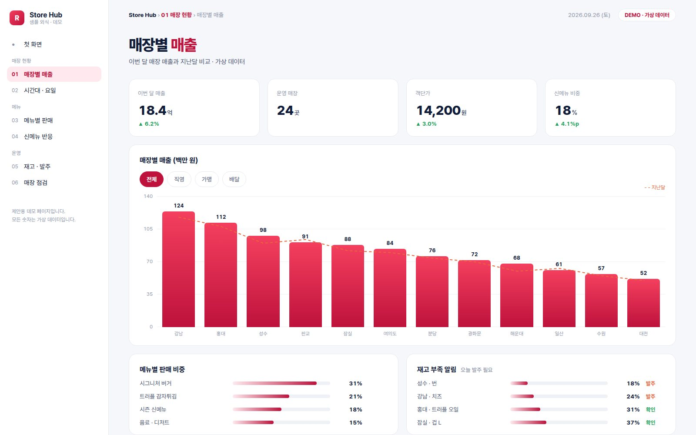
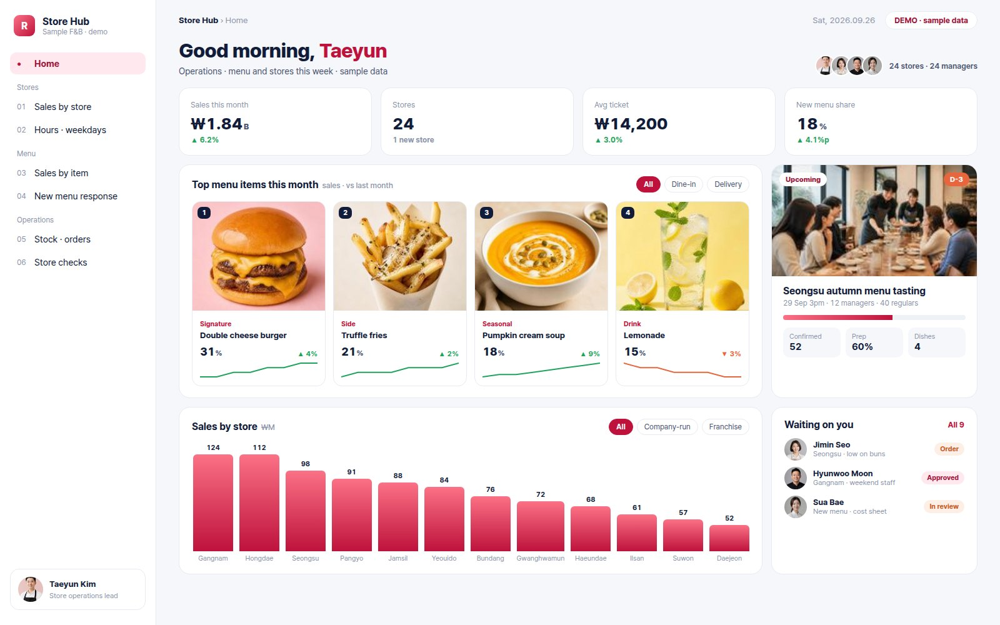

5 weeks later,
your team?5주 뒤,
우리 팀은?
Your team’s 5 weeks우리 팀의 5주
- Now지금
“Lots of meetings, nothing settled.”“회의는 많은데, 정리된 건 없어요.”
- 30-min call30분 상담
We start with what worries you most.가장 큰 고민부터 함께 진단해요.
- Weeks 1–2 · Coaching1~2주차 · 코칭
A work playbook gets everyone on the same page, then each person gets a report on their strengths and style.워크 플레이북으로 마음가짐부터 맞추고, 팀원별 강점 · 성향은 개인 리포트로 정리해 드려요.
- Weeks 3–5 · Platform3~5주차 · 플랫폼
That way of working becomes your team’s own platform.정리한 방식이 그대로 팀 전용 플랫폼이 돼요.


- 5 weeks later5주 뒤
“Everyone sees their part, so the team just runs.”“각자 할 일이 보이니, 팀이 알아서 굴러가요.”
→ You focus on the bigger work→ 팀장님은 더 큰 일에 집중해요
How it works, design, security & FAQ →진행 방식 · 디자인 · 보안 · FAQ 자세히 보기 →